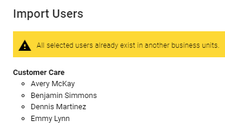
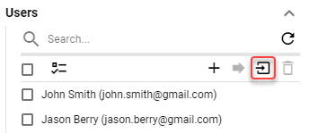
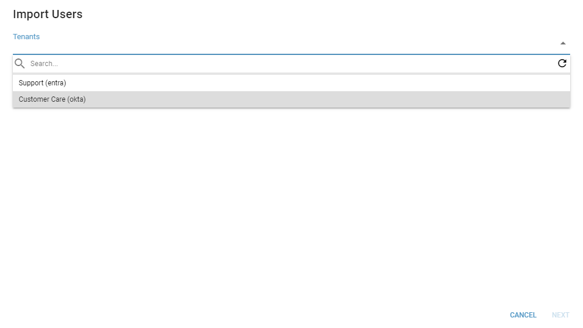
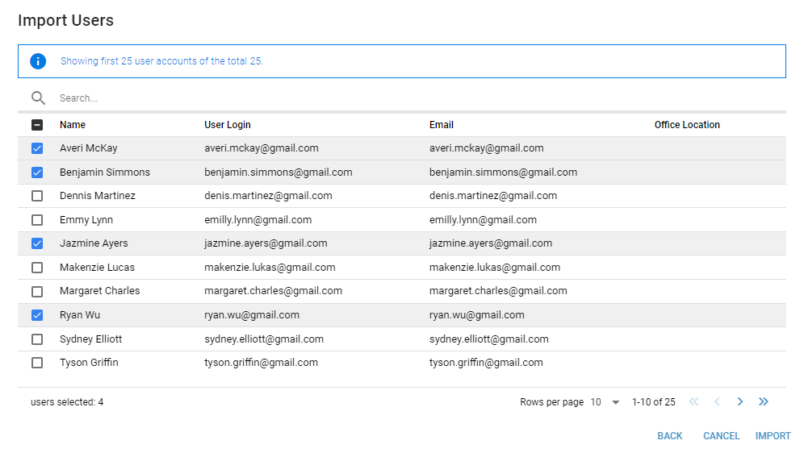
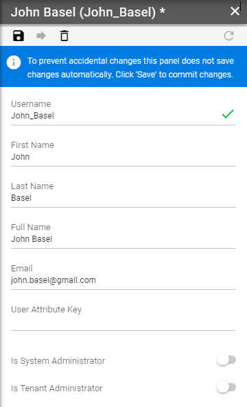
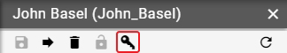
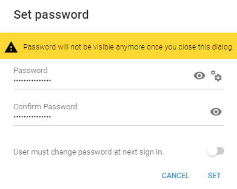
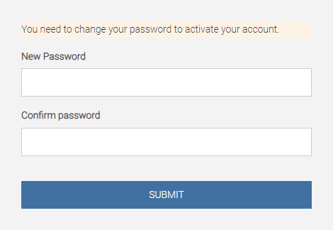

Users¶
Users are able to log into DW application.
Importing Users
If configured, users can be imported from Okta and Microsoft Entra Id tenants. For more information about tenant configuration see Security chapter.
When importing users from Microsoft Entra ID or Okta keep in mind:
user can be imported only once within all Business Units
email is required for imported user. If user has no email configured in the Microsoft Entra Id or Okta, it is required to configure it in user detail after import
import button is hidden if no tenants are configured
Users can be imported by clicking the import button.
Figure 1: Import button
In the following dialog, select the tenant from which to import users.
Figure 2: Select a tenant
Select users which should be imported and click “IMPORT”.
Figure 3: Select users
When typing in the search bar, the defined term is searched for in all columns. However, it is necessary to enter the term from the beginning.
For example, if you want to search for user “Benjamin”:
“enjamin” or “jamin” will not match the desired user
“ben” or “benja” will match the user
Creating New User
When new user is being created panel contains:
Figure 1: Creating New User
- Username
Required
The username used for identification into the application.
- First Name
User’s first name.
- Last Name
User’s last name.
- Full Name
User’s full name displayed in DW.
Required if user is imported from Microsoft Entra ID or Okta
User’s Email address.
- User Attribute Key
User identity in an external system, that is used to map user attributes to this user.
- Is System Administrator
Whether user has full access to DW application. Only system administrators can assign this permission to other users. For security reasons assigning full permissions require confirmation to avoid accidental assignment.
- Is Tenant Administrator
Whether user has access to Business Unit administration in DW application. System administrators and tenant administrators can assign this permission to other users. Tenant administrator has access to all Business Units except the “System” Business Unit.
Setting User’s Password
User’s password can be set by clicking button located in user panel toolbar. This button is visible only after user has been created on server (after first save).
Password cannot be set or changed for imported users.
Figure 4: SET PASSWORD button
After clicking this button Set Password dialog is opened containing:
Figure 5: Set password dialog
- Password
Required
User’s password.
Make sure to copy the password before setting since dialog will be automatically closed upon successful set. The password will not be available afterwards.
- Confirm Password
Required
Confirm the set password.
- User must change password at next sign in
Required
If enabled, next time a user logs in, he will be prompted to set a new password.
Figure 6: New password
- New Password
Required
User’s new password.
- Confirm Password
Required
Confirm the new password.